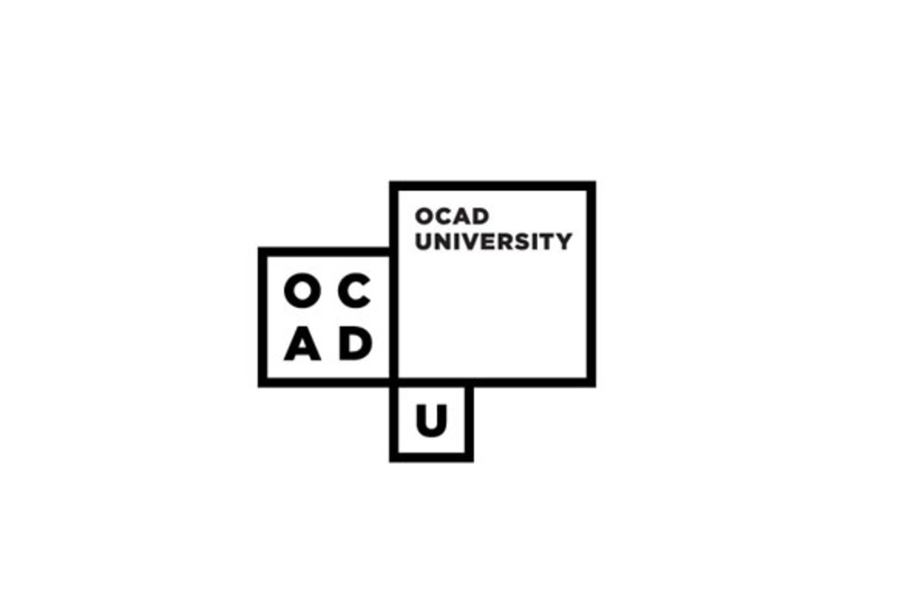
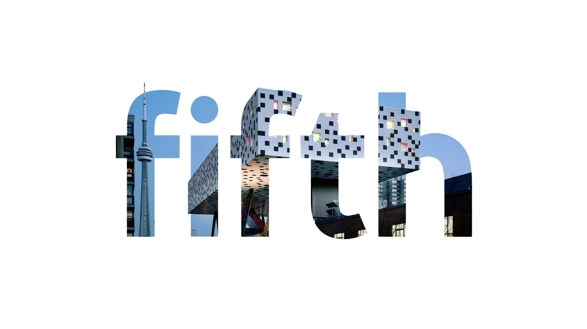
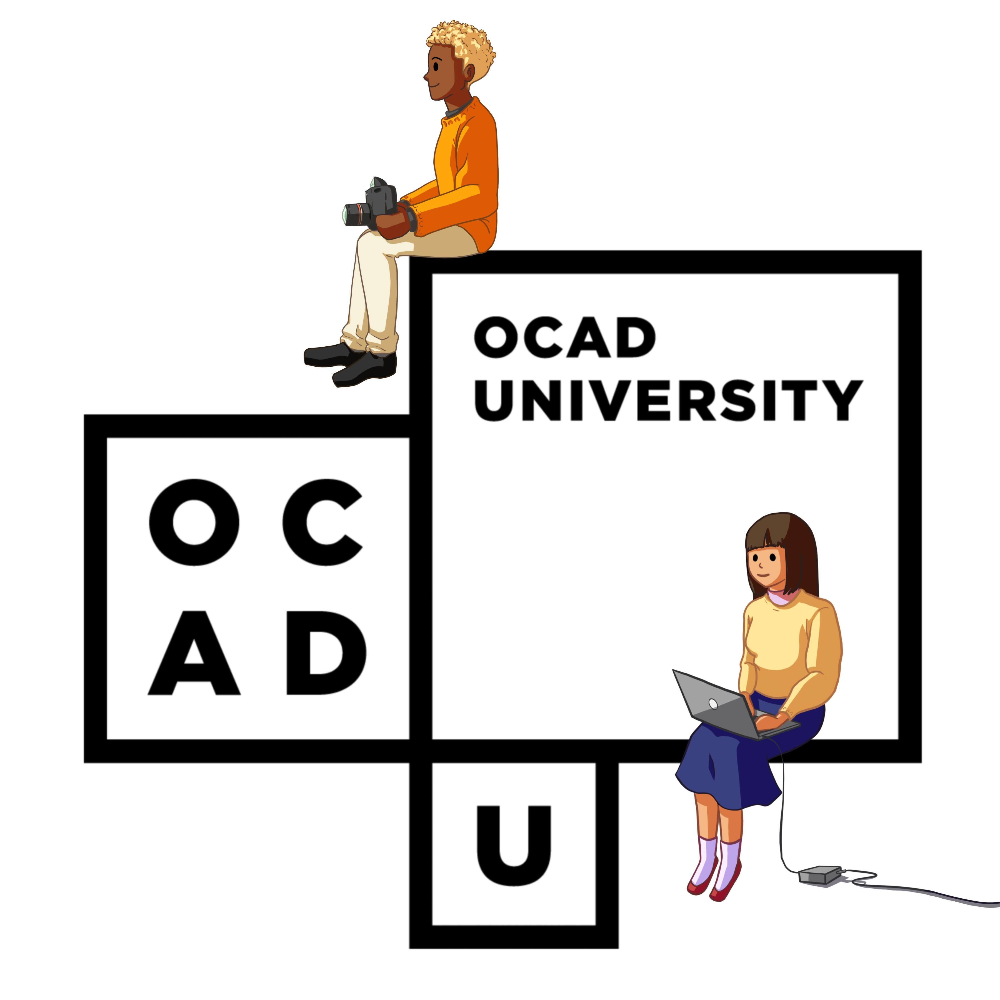

Nancy Snow
At vero eos et accusamus et iusto odio dignissimos ducimus qui blanditiis praesentium voluptatum deleniti atque corrupti quos dolores et quas molestias excepturi sint occaecati cupiditate non provident, similique sunt in culpa qui officia deserunt mollitia animi, id est laborum et dolorum fuga. Et harum quidem rerum facilis est et expedita distinctio. Nam libero tempore, cum soluta nobis est eligendi optio cumque nihil impedit quo minus.
The GD Gradex Team
Project Director
Web & Exhibition Designer
Committee Secratary
Faculty Web Advisor
Ali Qadeer
We wanted to give a huge thank you to you for taking the time to look at our site, to all of the students who contributed their work. We especially wanted to thank the following people for their incredible contribution and help to this project and all of the (pre Covid-19) GradEx work.
Ali Qadeer
Christine Xia
Cole Wielgosz
Connie Le
Dennis Espino Maravilla
GD GradEx members
Isabel Meirelles
Lucy Ferrira
Michelle Eileen
Nancy Snow
Our workshop professors
Patricia Luk
Christine Xia
Ruizhou Li
Tara Garcia
OCADU Graphic Design 2020
Recession Grads is a digital archive & exhibition set to showcase the work of the Graphic Design 2020 graduating class at OCAD-U. The work featured on this site has been produced over an 8 month period of research, iteration, and craft. Supported by faculty and their classes, students produced work that pertained to their design practice and topics they were passionate about such as equity, sustainability, social justice, and more. Despite COVID-19 halting our work and cancelling our graduate show and exhibition GradEx105, students still worked to complete their projects for themselves, their professors, and this website. Recession Grads exists to acknowledge the situation of what it is like for us to graduate into a recession, and a period of time where everything is a missing glyph of uncertainty and at an indefinite pause. This site serves to showcase our work despite the circumstances and to start new traditions of archiving future graduates' work.
OCAD University
OCAD Industrial Design 2020
OCADvertising 2020